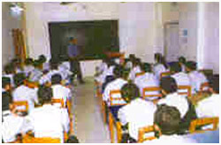

Home
Vision
History
Location
Organisation
Curriculum
School Uniform
Teaching Staff
Facilities
Activities
Rules
Register online
Photogallery
Contact Us
Site Map
Teaching Staff
The school has a team of highly qualified, trained and experienced  teachers selected purely on merit-basis. In primary wing most of the lady teachers are Convent educated and Kindergarten trained. Nursery classes are dominated by play-way method. Special cassettes train the kids in copying correct pronunciation and lilting tunes in rhymes and recitation periods. In secondary wing the management has appointed some model hands in key subjects to cater to the educational needs of pupils so that they can keep abreast of modern times
Powered by Google.com